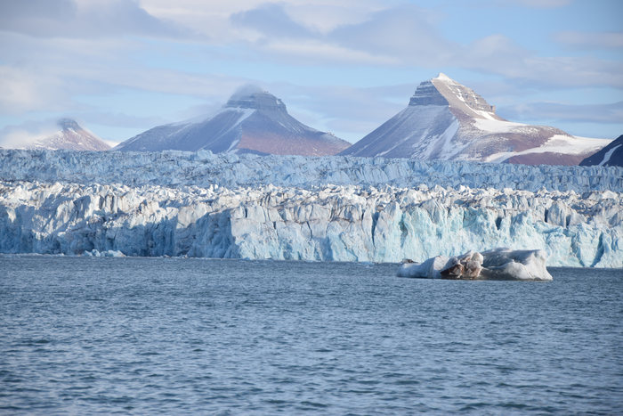
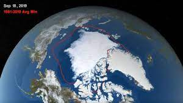
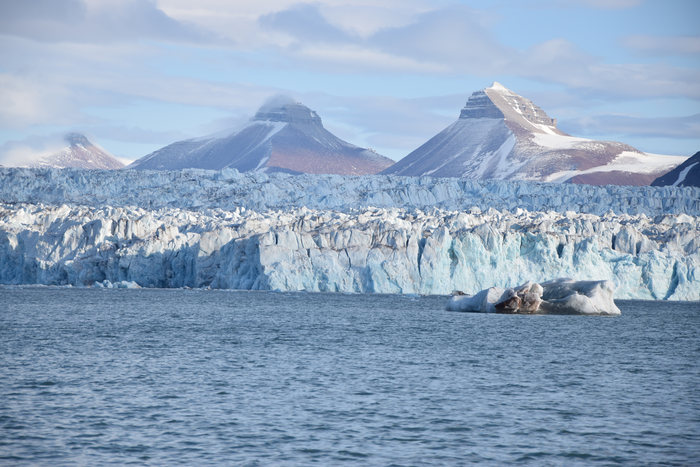
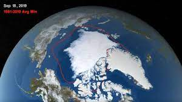

Son numerosas las definiciones de región ártica. El límite del área generalmente es considerado en círculo polar ártico, el cual es el límite del sol de medianoche y del oso polar. Otras definiciones están basadas en el clima y la ecología, como la isoterma de los 10 °C del mes de julio, el cual corresponde aproximadamente a la línea arbórea en la mayor parte del ártico. Social y políticamente la región ártica incluye los territorios más norteños de los ocho estados árticos (Canadá, Dinamarca, Estados Unidos, Finlandia, Islandia, Noruega, Rusia y Suecia), incluyendo Laponia, si bien para las ciencias naturales, por sus características gran parte de este territorio es considerado subártico.
El Ártico es en su mayor parte un extenso océano cubierto de una banquisa, rodeado por tierras despobladas de árboles y con el subsuelo helado. Rebosa de vida, incluyendo organismos viviendo en el hielo, peces, y mamíferos marinos, pájaros, y algunas sociedades humanas. Por su naturaleza la región ártica es una área única. Las culturas de la región y los oriundos del lugar se han adaptado a las condiciones extremas y al frío. Desde la perspectiva del balance físico, químico y biológico, está en una posición clave. Reacciona de forma sensible particularmente a los cambios del clima, que aporta un reflejo global del estado del entorno. Desde la perspectiva de la investigación en el cambio climático, este es considerado un sistema de alerta temprana.
Su principal problema es el deshielo ártico (reducción del porcentaje helado del océano ártico y derretimiento de la capa de hielo de Groenlandia) que provocaría conflictos por su soberanía debido al tránsito de buques, que acortarían distancias por un potencial paso del Noroeste, y sus campos petrolíferos y otros combustibles fósiles, un tercio de las reservas mundiales.